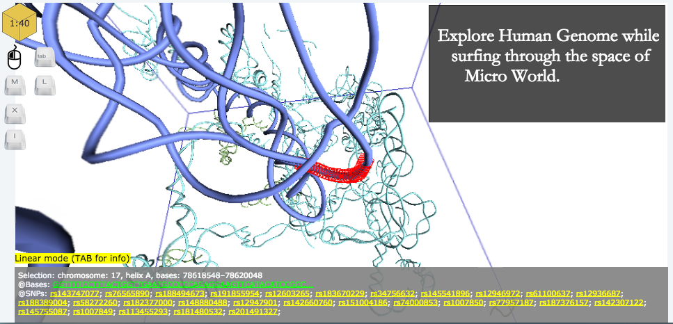
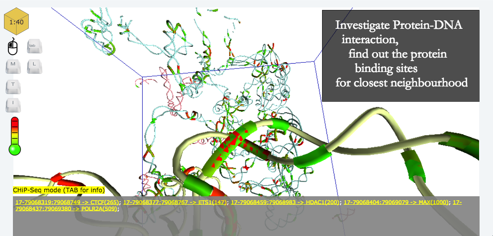

- 

- 


3DBD Genome browser, contact: eXascale Infolab:
Philippe Cudre-Mauroux, Ruslan Mavlyutov;
McGill University SoCS: Jérôme Waldispühl, Alexander Butyaev.
3D Genome Browser
About the 3D Genome Browser
Welcome to the 3D Genome Browser. This is the website that provides detailed description of the structure of Human Genome. This web browser is fully interactive 3D viewer that allows user to move through the 3D space of genome model, interact with system with a help of commonly-used input/output devices and retrieve data of genome sequence variations, ChIP-sequencing data etc. The data was collected from 1000 Genomes Project and The ENCODE Project.
This browser has been implemented with a help of Javascript technologies and, in particular, Three.js - javascript library that provides an opportunity to work with WebGL-3D objects in web browser.
It has been optimized for working with big sets of biological data and built on top of a NoSQL database for comfortable visualization, examination and data querying. In addition, the database contains several components that disitinguish this system among most Genome Browsers:
Both of these components improve the standard approach to the storing the data. From the user side - it reduces the response time and, therefore, increases user's experience of exploring 3D structure of genome and its elements.
The 3D Genome Browser is developed and maintained by Computational Structure Biology Group at Computer Science Department, McGill University, Canada and eXascale Infolab at the University of Fribourg, Switzerland.
Browser Functionality
The general idea of the 3D Genome Browser is to show the genome sequence in 3 dimensions, provide an opportunity to explore genome both in standard (linear) way and using advantages of space location of chromosomes, genes, their interactions.
Currently in the system there are 47 3d structures available: 23 chromosomes of Leukemia B-Cell, 23 chromosomes of Healthy B-Cell (GM06990 cell type) and simualations with complete genome for K562 Cell Type. They can be chosen on the first tab of 3D Genome Browser. For deep understanding of how 3d Genome Browser works and what kind of data it represents - choose Simulation data - K562 Cell Type, All Chromosome, Simulations or any chromosome of Healthy GM06990 B-Cell.
Another important feature of this system is the way of information representetion. In most cases, user can retrieve information while moving through the space in the bottom panel of the screen, or using special commands to get pop up window for detailed information.
This system provides wide variety of tools for exploring genome.
In comparison with standard Genome Browsers we deal with 3D coordinates, models and associated with them biological entities. That is why it is important to provide an opportunity to change the current position in space with standard way in format "chr [number of chromosome] [start position] [end position]", where any non numeric symbol can be separator (for instance, "chr 5: 1234567 - 1234765"); and in 3 dimensional way - format "X Y Z", where X,Y,Z are coordinates of particular point in database (this way is very specific and usually usefull for people, who want to make a connection between initial Hi-C data and visual representation; for instance, "147:2345:924"), any non numeric symbol can be separator as well. As 3D Genome Browser works with such biological data as genes, user can move the camera to look at the specific location of gene and its surroundings. Knowledge of the location of gene is not required.
| B-Cell, Leukemia | B-Cell, Healthy | K562, Simulations | |
|---|---|---|---|
| Positions in chromosome | chr12 12345-23456 OR 12345-23456 (this example is for 12 chromosome model) |
chr12 12345-23456 | |
| Gene | TP53 OR any other name of gene (case sensitive) |
||
| Model coordinates | 5.23:4.534:1.89 Which corresponds to X, Y, Z coordinates in database |
||
Example of using search field of 3D Genome Browser
Fundamentally there are 3 different modes that allow user interact with system in different ways and/or retrieve special information from database.
Linear mode
Basically, linear mode in 3D space is the putting old canons of representation in a new light. It easily can be compared with such genome browser as UCSC Genome Browser and track system, which it uses. User can examine and analyze only one sequence of genome at a time but instead of plane tables 3D Genome Browser uses partition of the screen on 2 parts: 3D models and panels with information that is appeared immediately by pointing to the specific part of the genome. To investigate specific part of genome left click of mouse will call popup window with almost the same information but with opportunity to click on any link and continue investigation on the National Center for Biotechnology Information web site .
Also, system provides an opportunity to change the size of observable area of genome sequence and, therefore, of retrieving data from the server by scrolling the mouse (up to several thousands of nucleotides).
Besides, group of scientist raised an issue whether it is possible to map ChIP-sequencing data (Transcription Factors) and Single Nucleotide Polymorphisms (SNPs). This problem has been solved by aligning the position of SNP in chromosome and particular Transcription Factor. Thus, in this mode the system provides this feature for linear part of chromosome. The user can use it by selecting particular linear part of chromosome and then pressing the key X. There will be shown popup windom that contains basic information about chromosome, SNP position, SNP identificator (click on it to find more information on The National Center for Biotechnology Information website), transcription factor and its effect level. For scientists' comfort, dynamic filtering system has been integrated. As well filtered data can be easily exported in CSV format by clicking "Export to CSV".
Cubic mode
Currently, almost all Genome Browsers use linear approach for showing the biggest part of data. That is observable area is only integral and complete part of one genome's chromosome. But investigation of interactions between two not connected areas of genome is still open-ended problem.
Cubic mode of 3D Genome Browser provides to user an opportunity to use almost all advantages of 3 dimensions of space. Basic shape for retrieveing of data is resizable cube. Once pointer is on the genome strand, the cube will be automatically built around this point. At the same time scrolling action is available for user to change size of observable area. Data that is available for all parts of strands that are located inside the cube will be shown on the popup window after left click of mouse. It contains information about all parts of all chromosomes that fit in the cube: chromosome with positions and complete list of SNPs (links to NCBI website for deep investigation).
Same as previous mode (Linear Mode) system provides an opportunity to map ChIP-Sequencing data to SNPs that are fit in the range of the particular Transcription Factor. The difference is that in the cubic mode can investigate all strands that are in the cubic area.
Important: All actions for this mode are available for any strand from the space cube, where user is currently located (see Memory Management chapter).
ChIP-Seq mode
From biological terminology, ChIP-sequencing is basically the method to analyze protein (or Transcription Factor) interactions with DNA. By using this mode user gets an opportunity to visualize all transcription factors that have been found for particular Cell Type and investigate it in details using UCSC genome browser. Visualization step starts automatical when user switch mode to ChIP-Seq mode. There will be appeared colored parts of genome (from green to red), which are the measured representation of protein-DNA interaction. The color identifies the level of affection from the weakest (green) to the strongest (red) level. In numbers that means: effect level 0 - green, effect level 1000 - red.
To call popup window with the general information and link to UCSC Genome Browser user can point to the colored part of genome and left click of mouse. While moving to another cube, ChIP-Seq data will not be coloured untill user clicks T key. To refresh the memory and to delete stored ChIP-Seq information for current cube (ChIP-Seq data, visualization entities) user should click T key. In this case all colored segments in current cube will be disappeard. To delete all ChIP-Seq information (ChIP-Seq data, visualization entities) user should click Shift-T key. All colored segments of genome will be disappeard.
Important: In case of switching to another mode, all colored segments of genome will be disappeared (see Memory Management chapter).
Genes
The 3D Genome Browser provides an opportunity to work with genes as well. With help of this system user can move camera to the location of particular gene and colour gene in logarithmic scale: log(GENE_EXPRESSION_LEVEL) (normalized according to the maximum gene expression level over the whole genome; green-red colors are used for coloring). Also system is able to list all genes which are available in current cube (fully or partly). Here user can choose particular gene, find some information and ask system to colour it.
Using customer's SNP data
Originally, in Linear and Cubic modes scientist can retrieve SNP data that initially has been collected from enormous libraries of 1000 Genomes Project. It is usefull for research, but it can't help to typical customer to investigate his own mutations even if he has required information from Genome Center. 3D Genome Browser provides an opportunity to securely upload the data to the genome browser and to start comparison SNPs with those that came from the 1000 Genome Project. All calculations (which are connected with customer's snp data) are implemented locally on the user's machine and, thus, data cannot be sent to server and/or distributed in SNP resources.
After choosing the 3d Model of genome (its cell type), on the first tab user can find Use your own data. To start using this feature user should choose file with SNP Data in specific format. 3D Genome Browser accepts only JSON format with data:
- Number of chromosome ("1", "2" etc) - Once per occurrence;
- Position of the SNP in current chromosome
- SNP identificator (for example, "rs12564807")
- Genotype (for example, "AA")
Example of the data: {"1" : [[734462,"rs12564807","AA"], ...], "2" : [[...], [...]], ...}
To simplify converting process, we have implemented simple converter (Java-based application). It can be downloaded here. Detailed description of this can be found here.
Once the data is uploaded in system, you have an opportutinity to compare your SNPs with the SNPs that came from server. To do this:
- Choose Linear mode (for current reliase it works only for linear mode)
- Try to point to different parts of genome and the same moment observe an exclamation mark to the left from the line that defines your current mode.
- Left click of mouse and you will find additional column "@Customer Data/Genotype".
- Using scrolling move to complete line with SNP's identificator, genotype from system and genotype from customer's SNP data. It will be highlighted in either red of green color, depending on match or mismatch of two genotypes.
Important: After finishing the work with cutomer's SNP data to increase the performance of local machine - go to the first "Welcome Page/UI" tab and click "Delete User Data" button (see Memory Management chapter).
Memory Management
In spite of the fact that this Genome Browser is the website, biggest part of the processing of the data that represents on the user's screen, is on the client machine. Also, the drawing of 3D objects is very memory consuming process. That means the development has been limited by the capabilities of typical computer. To reduce the local machine load, development group introduced the Memory Management Policy.
Well Known Problems
Currently we defined that 3D Genome Browser supports such web browsers as Google Chrome and FireFox. However, FireFox has its own implementation of Pointer Lock API, which fully depends on FullScreen API. In other words, to use fully 3D Genome Browser in FireFox, firstly make sure that you always in FullScreen mode. Otherwise, it can cause not correct behaviour from the system.
Controls
| Mode | Key | Description |
|---|---|---|
| Linear | Left Click | Get popup window with basic information about chromosome, selected positions, sequence of DNA, and SNPs |
| Cubic | Left Click | Get popup window with basic information about selected strands, chromosomes, positions and SNPs |
| ChIP-Seq | Left Click | For colored part of strand: get popup window with basic information about the Transcription Factor, its positions and level of effect |
| T | Colour all strands in current cube according to the ChIP-Seq experiment data: Transcription Factor and effect level (only for cube other from one where mode has been activated). Delete stored ChIP-Seq information for current cube (ChIP-Seq data, visualization entities). |
|
| Shift-T | Refresh field of view: to erase all coloured parts of strands from the memory. (It will immediately improve performance of user's local machine.) | |
| Linear and Cubic | X | Get popup window with mapped ChIP-Seq data and SNPs |
| +/- (scroll) | Change size of observable area. | |
| All modes | M | Change mode in loop from Linear to Cubic, from Cubic to ChIP-Seq and from ChIP-Seq to Linear mode |
| Tab | Get general information about the mode | |
| W,S,A,D | Move in space Forward, Back, Left, Right respectively | |
| Mouse | Look around | |
| I | List all genes available in current cube with some information and opportunity to colour it | |
| L | Define the points to measure a distance between them. Show the distance between two already existing points. |
|
| Shift-L | Erase information about the distance between two existing points (including points themselves). User must use this to measure distance between other two points. |